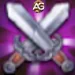
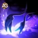
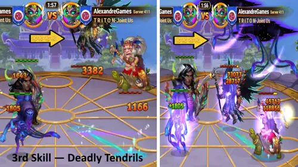

Un enemigo sale por los aires y K'arkh convierte de repente la habilidad de control de un compañero en un golpe devastador. Ese es el momento que quiero que entiendas antes de gastar tus recursos. En Hero Wars: Dominion Era, su daño se basa en crear un equipo que siga lanzando enemigos al aire mientras él permanece con vida para castigarlos.
Mi punto de partida es sencillo: fortalecer Tentáculos mortales, dar a su daño físico suficiente Penetración de armadura y protegerlo hasta que empiece el combo. Te explicaré sus habilidades, ascensiones, aspectos, glifos, artefactos, mascotas, counters, banderas de guerra y dos equipos, incluida la colaboración con Wodryn que funcionó bien en mis pruebas.


📋 Índice de K'arkh
¿Quién es K'arkh en Hero Wars: Dominion Era?
K'arkh es un Guerrero basado en Agilidad que lucha en la primera línea. Su mecánica distintiva es Tentáculos mortales: mientras está vivo, ataca a los enemigos lanzados al aire, incluidos los lanzamientos provocados por aliados. Esto convierte a Kai, Faceless y Wodryn en compañeros valiosos. Lo considero el principal causante de daño físico, que necesita protección y lanzamientos al aire coordinados.

- Rol principal: Guerrero
- Atributo principal: Agilidad
- Posición: Primera línea
- Patrocinio compatible: Fenris, Mara, Vex
- Piedras de alma: Cofres de almas, Atrio de almas, Tienda del Torneo de los Elementos
Ataque básico: 107.314 de daño físico (100% del Ataque físico) antes de la mitigación enemiga, con un tiempo de recarga base indicado de 5,2 segundos.
Valoración general de K'arkh en el meta
Estas son mis valoraciones de su build y sus enfrentamientos, basadas en su control, potencial de daño, sinergia y dependencia de los aliados. Son valoraciones editoriales, no una clasificación basada en porcentajes de victoria medidos.
- Control: ★★★★☆ — puede lanzar al aire y aturdir a tres objetivos con poca Salud.
- Daño: ★★★★★ — excelente potencial de daño explosivo cuando los lanzamientos funcionan y se superan las defensas físicas.
- Sinergia: ★★★★★ — los lanzamientos al aire de los aliados alimentan directamente su daño pasivo.
- Independencia: ★★☆☆☆ — la protección, los lanzamientos y la elección de enfrentamientos influyen mucho en sus resultados.
Estadísticas máximas de K'arkh — Hero Wars: Dominion Era
Estos valores de referencia de una build maximizada se muestran sin mejoras temporales de combate ni bonificaciones de patrocinio de mascotas. Describen una build completa, no las estadísticas que necesita un principiante antes de utilizarlo.
| Estadística | Valor | Estadística | Valor |
|---|---|---|---|
| Inteligencia | Agilidad | ||
| Fuerza | Salud | ||
| Ataque físico | Ataque mágico | 7.716 | |
| Armadura | Defensa mágica | 47.143 | |
| Penetración de armadura | 48.671 | Precisión | |
| Resistencia a críticos | Poder |  216.164 |
Ventajas y desventajas de K'arkh — Hero Wars: Web y Facebook
✅ Ventajas
- Convierte sus propios lanzamientos al aire y los de sus aliados en daño físico mediante Tentáculos mortales.
- Los ataques con daño doble contra objetivos que cumplen la condición de nivel de la pasiva crean un gran potencial de daño explosivo.
- Nexo del horror presiona a los tres enemigos con menos Salud y ofrece al equipo una forma de rematar objetivos vulnerables.
- Negador de las leyes combina el bloqueo físico con energía adicional, y Factor de supervivencia recompensa con curación los golpes acertados contra enemigos en el aire.
- El Ataque físico mejora su daño principal y también aumenta los valores de sus efectos de ascensión posteriores.
❌ Desventajas
- Necesita sobrevivir para activar Tentáculos mortales; una build con mucho daño no puede ayudar después de que caiga.
- Impedir los lanzamientos al aire puede interrumpir tanto su daño como la curación asociada a los ataques contra enemigos en el aire.
- Su daño físico necesita suficiente Penetración de armadura contra adversarios con mucha Armadura.
- El bloqueo físico de la grieta es temporal y depende de una probabilidad; no proporciona protección general contra el daño mágico.
- Los efectos que dependen del nivel, el bloqueo de la ganancia de energía y el bloqueo de curación pueden hacer que el combo sea menos fiable.
- Las mejoras de ascensión llegan más tarde y no deben sustituir la inversión en su conjunto básico de cuatro habilidades.
Prioridad de mejora de las habilidades de K'arkh — Hero Wars: Dominion Era
Descubre cómo K'arkh transforma los lanzamientos en daño, qué habilidades merecen tu oro primero y cómo sus ascensiones posteriores mejoran tanto la presión como la supervivencia.
Mi orden de mejora para principiantes: Tentáculos mortales → Nexo del horror → Negador de las leyes → Factor de supervivencia. Mantén las habilidades que dependen del nivel cerca del nivel de los enemigos a los que te enfrentas. Las fichas siguientes conservan su orden dentro del juego y las prioridades se aplican antes de desbloquear las ascensiones.
1.ª habilidad — Nexo del horror (Nexus of Horror)
Descripción en el juego: K'arkh lanza al aire a los tres enemigos con menos Salud. Cuando los enemigos afectados vuelven a caer, quedan aturdidos durante 2 segundos. La probabilidad de aturdir disminuye si el nivel del objetivo es superior a 130.

Explicación de la habilidad: Esta habilidad definitiva aporta el lanzamiento al aire y un aturdimiento de 2 segundos. La definitiva básica no tiene una fórmula de daño directo; Tentáculos mortales aporta el golpe posterior de 107.314 de daño físico por objetivo, o 214.628 cuando se aplica la condición de daño doble. Piensa en Nexo como la preparación y en la pasiva como el golpe. Son valores de referencia antes de la mitigación, no una cantidad garantizada de Salud eliminada.
Efecto: 3 objetivos con menos Salud; aturdimiento de 2 segundos al caer. El límite de nivel mostrado para el aturdimiento es 130.
Prioridad de mejora: Muy alta — Mantén su nivel competitivo para que el aturdimiento siga siendo fiable. Inicia tu propio combo de lanzamiento al aire, pero Tentáculos mortales es la primera inversión en daño porque también funciona con los lanzamientos de los aliados.
Información de la animación de la habilidad
- Tipo: Definitiva
- Objetivos: 3
- Duración del aturdimiento: 2 segundos
Eco del horror (Echo of Horror) — Ascensión de rango II
Efecto de la ascensión: Después de Nexo del horror, aparece una zona bajo el enemigo con menos Salud que inflige daño cada segundo durante 8 segundos. En la tercera mejora, el enemigo más cercano a su centro es lanzado al aire cuando la zona desaparece.

Explicación de la habilidad: La mejora añade presión sostenida después del lanzamiento inicial. Empieza con 6.029 de daño por segundo (4,5% del Ataque físico + 1.200), luego aumenta a 8.039 (6% del Ataque físico + 1.600) y 10.156 (7,6% del Ataque físico + 2.000). La última mejora mantiene 10.156 por segundo y añade el lanzamiento final, que puede activar Tentáculos mortales mientras K'arkh esté vivo. El atributo utilizado en la fórmula es el Ataque físico; el texto proporcionado para el efecto no identifica explícitamente el tipo de daño de la zona.
Por qué importa más adelante: Añade una segunda oportunidad de lanzar a un enemigo al aire, pero primero debes desbloquear la ascensión y comprar su mejora final. No planifiques un equipo de inicio de juego como si ese lanzamiento adicional ya estuviera disponible.
2.ª habilidad — Negador de las leyes (Negator of Laws)
Descripción en el juego: K'arkh abre una grieta interdimensional que puede bloquear ataques físicos enemigos durante 8 segundos. Gana energía adicional por cada ataque bloqueado.

Explicación de la habilidad: Durante 8 segundos, cada ataque físico recibido que se pueda bloquear tiene una probabilidad de bloqueo del 52%. Un bloqueo exitoso también proporciona 15,5% de energía adicional, lo que ayuda a K'arkh a alcanzar otra definitiva. Es un efecto defensivo y de energía, sin fórmula de daño directo. El bloqueo no está garantizado y no convierte los ataques mágicos en ataques físicos que se puedan bloquear.
Fórmula de la probabilidad de bloqueo: 52% (0,2 × nivel de la habilidad + 26).
Fórmula de la energía adicional: 15,5% (0,05 × nivel de la habilidad + 9).
Prioridad de mejora: Alta — Más bloqueos favorecen la supervivencia y crean más oportunidades de ganar energía adicional. La coloco después de las habilidades de lanzamiento al aire y daño, pero aumento su prioridad si los ataques físicos lo matan antes de su primer combo útil.
Información de la animación de la habilidad
- Tipo: Periódica
- Tiempo de recarga: 18 segundos
- Duración: 8 segundos

3.ª habilidad — Tentáculos mortales (Deadly Tendrils)
Descripción en el juego: Mientras K'arkh esté vivo, golpea a cada enemigo lanzado al aire. Si el nivel del enemigo es igual o inferior a 130, inflige daño doble. La probabilidad de infligir daño doble disminuye si el nivel del objetivo es superior a 130.

Explicación de la habilidad: Cada lanzamiento exitoso de un enemigo al aire le da a K'arkh un objetivo para esta pasiva, ya lo haya provocado Nexo, Faceless, Kai o Wodryn. Cada golpe inflige 107.314 de daño físico (100% del Ataque físico). Contra un enemigo que cumple la condición de nivel, pasa a ser 214.628 de daño físico (200% del Ataque físico) antes de la mitigación. Por tanto, un lanzamiento de tres objetivos que cumpla las condiciones representa 643.884 de daño físico bruto total, repartido entre esos tres objetivos.
Fórmula del daño: 107.314 (100% del Ataque físico); golpe doble: 214.628 (2 × 107.314).
Prioridad de mejora: Muy alta — Esta es mi primera prioridad porque convierte cada lanzamiento de los aliados en daño. Su condición de nivel hace que invertir en la habilidad sea importante, aunque la fórmula de ataque mostrada dependa del Ataque físico.
Información de la animación de la habilidad
- Tipo: Pasiva
- Activación: Un enemigo es lanzado al aire mientras K'arkh está vivo
- Límite de nivel para el daño doble: 130 con el nivel de habilidad indicado
4.ª habilidad — Factor de supervivencia (Survival Factor)
Descripción en el juego: Los ataques contra enemigos lanzados al aire curan a K'arkh una fracción del daño infligido.

Explicación de la habilidad: K'arkh recupera 27,5% del daño infligido por los ataques correspondientes contra enemigos en el aire. No inflige daño independiente. Si un golpe contra un enemigo en el aire realmente inflige 100.000 de daño físico, la recuperación base es de 27.500 de Salud, antes de los modificadores de curación. La Armadura enemiga puede reducir el daño que alimenta esta curación, y el bloqueo de curación puede reducir la recuperación.
Fórmula de la curación: 27,5% (0,25 × nivel de la habilidad − 5) del daño infligido.
Prioridad de mejora: Media-alta — El daño fiable contra enemigos en el aire debe ir primero, porque esta curación necesita daño para funcionar. Mejórala después del combo principal; aumenta su prioridad práctica si K'arkh sobrevive a la apertura, pero no puede recuperarse entre lanzamientos.
Abismo inmortal (Immortal Abyss) — Ascensión de rango V
Efecto de la ascensión: El desbloqueo inicial añade 5% de curación adicional a partir del daño infligido; las mejoras aumentan ese añadido a 7% y después 10%. La mejora final también proporciona una huida de un solo uso cuando K'arkh baja del 20% de Salud: entra en el abismo durante 2 segundos, evita los ataques enemigos y restaura 100.486 de Salud (75% del Ataque físico + 20.000).

Explicación de la habilidad: La curación adicional fortalece el ciclo de recuperación, mientras que la huida final puede dar tiempo para otro combo. Con la tasa base indicada, un añadido de 10 puntos porcentuales significa 37,5% de curación (27,5% + 10%). La curación independiente de la huida depende del Ataque físico y solo puede activarse una vez por batalla. Su fórmula da 100.485,5 con 107.314 de Ataque físico, mostrado como 100.486.
Por qué importa más adelante: Es una red de seguridad de progresión avanzada en el rango V. Hasta que se desbloquee su mejora final, usa un tanque y habilidades de apoyo para cubrir la apertura; la habilidad básica Factor de supervivencia no incluye la huida.
Mejor aspecto para K'arkh — Hero Wars: Dominion Era
Elige los aspectos de K'arkh según los problemas que resuelven: consigue que el daño físico atraviese la Armadura, mejora los golpes de sus tentáculos y después protégelo de las amenazas que lo matan.
Mi orden general de aspectos: Estelar → Celestial / Mascarada → Predeterminado → defensas para el enfrentamiento. Celestial y Mascarada ofrecen la misma bonificación de estadística indicada, así que cualquiera puede ser tu primer aspecto de Ataque físico. Mejora el Predeterminado junto a ellos cuando su coste total inferior encaje con tus recursos. Las bonificaciones de los aspectos se acumulan una vez desbloqueados; la apariencia visual es una elección cosmética.
Aspecto predeterminado
Ganancia de estadísticas: Agilidad +1.365
- Ataque físico procedente de la Agilidad: +4.095
- Armadura procedente de la Agilidad: +1.365
Cada punto de Agilidad otorga 2 de Ataque físico y 1 de Armadura, más 1 de Ataque físico adicional porque la Agilidad es el atributo principal de K'arkh.
Prioridad de mejora: Alta — Una mejora mixta eficiente: como atributo principal, la Agilidad añade daño y Armadura. Es útil al principio, mientras que los aspectos de Ataque físico directo ofrecen un aumento final de daño mayor.
Total de Piedras de aspecto de Agilidad para el nivel máximo:  30.825.
30.825.
Aspecto estelar
Ganancia de estadísticas: Penetración de armadura +10.650
Prioridad de mejora: Muy alta — Mi primer objetivo ofensivo contra enemigos con mucha Armadura. Unos golpes de tentáculos más fuertes aportan poco si la Armadura los absorbe. Una vez que ya penetras la Armadura del objetivo previsto, el Ataque físico adicional resulta más útil.
Total de Piedras de aspecto de Agilidad para el nivel máximo:  55.410.
55.410.
Aspecto de las profundidades oscuras
Ganancia de estadísticas: Defensa mágica +10.650
Prioridad de mejora: Baja — Una defensa para enfrentamientos concretos en lugar de una mejora de daño. Dale prioridad antes si la presión mágica es el motivo por el que cae; no mejora su probabilidad de bloqueo físico.
Total de Piedras de aspecto de Agilidad para el nivel máximo:  55.410.
55.410.
Aspecto celestial
Ganancia de estadísticas: Ataque físico +7.095
Prioridad de mejora: Alta — Fortalece directamente los ataques básicos y Tentáculos mortales, lo que también puede aumentar el daño que alimenta Factor de supervivencia. Además, mejora los valores de ambas fórmulas de ascensión.
Total de Piedras de aspecto de Agilidad para el nivel máximo:  55.410.
55.410.
Aspecto de mascarada
Ganancia de estadísticas: Ataque físico +7.095
Prioridad de mejora: Alta — Coincide con la bonificación indicada y la finalidad de Celestial. Desarrolla primero el que esté disponible y añade el otro cuando tu Penetración de armadura sea suficiente.
Total de Piedras de aspecto de Agilidad para el nivel máximo:  55.410.
55.410.
Aspecto solar
Ganancia de estadísticas: Armadura +10.650
Prioridad de mejora: Media — Le ayuda a sobrevivir a los ataques físicos fuera de la grieta o cuando falla un bloqueo. Priorízalo antes cuando el daño físico explosivo impida el combo inicial.
Total de Piedras de aspecto de Agilidad para el nivel máximo:  55.410.
55.410.
Aspecto invernal
Ganancia de estadísticas: Defensa mágica +21.300
Prioridad de mejora: Media — Una bonificación indicada de Defensa mágica mayor para enfrentamientos mágicos difíciles. No es una primera inversión universal; considera el acceso y el coste de mejora antes de comparar su valor con Profundidades oscuras.
Total de Piedras de aspecto de Agilidad para el nivel máximo:  110.520.
110.520.
Prioridad de mejora de los glifos de K'arkh
Gasta recursos de glifos donde K'arkh más se beneficia: Penetración de armadura y Ataque físico van primero, mientras que Salud y Armadura le ayudan a vivir lo suficiente para golpear.
Mi orden general de glifos: Penetración de armadura → Ataque físico → Agilidad → Salud → Armadura. Si muere antes de atacar, corrige primero el problema defensivo que lo limita. El orden visual siguiente coincide con el del juego.

1.er glifo — Salud
Ganancia de estadísticas: Salud +62.200
Prioridad de mejora: Media-alta — Una reserva de Salud mayor le ayuda a alcanzar su primer combo y deja margen para que la curación funcione. Ponla por delante del daño cuando las muertes tempranas sean el problema.

2.º glifo — Agilidad
Ganancia de estadísticas: Agilidad +1.135
Prioridad de mejora: Alta — Proporciona +3.405 de Ataque físico y +1.135 de Armadura a este héroe de Agilidad, combinando ataque y una ganancia defensiva útil.
Conversión de la Agilidad: 1.135 × 3 = +3.405 de Ataque físico; 1.135 × 1 = +1.135 de Armadura.

3.er glifo — Ataque físico
Ganancia de estadísticas: Ataque físico +4.340
Prioridad de mejora: Muy alta — Mejora directamente Tentáculos mortales y los ataques básicos. También aumenta el daño bruto que puede alimentar su curación por ataques contra enemigos en el aire.

4.º glifo — Armadura
Ganancia de estadísticas: Armadura +6.500
Prioridad de mejora: Media — Útil contra la presión física cuando la grieta no está disponible o falla al bloquear. No puede sustituir a la Defensa mágica contra amenazas mágicas.
5.º glifo — Penetración de armadura
Ganancia de estadísticas: Penetración de armadura +6.500
Prioridad de mejora: Muy alta — Mi primer glifo de daño contra objetivos con mucha Armadura porque ayuda a los golpes físicos a alcanzar su potencial. Pasa a centrarte en el Ataque físico cuando la Armadura del objetivo ya esté cubierta.
Prioridad de mejora de los artefactos de K'arkh — Hero Wars: Dominion Era
Desarrolla los artefactos de K'arkh para lograr daño físico fiable: el libro aporta penetración, el arma refuerza al equipo y el anillo añade Agilidad útil.
Mi orden general de artefactos: Folio del alquimista → Esencia de K'arkh → Anillo de Agilidad. Compara la fiabilidad de activación del arma con el valor permanente del libro; sus recursos de mejora y su progresión de estrellas son consideraciones distintas.

Artefacto de arma — Esencia de K'arkh
Ganancia de estadísticas al activarse: Ataque físico +33.459 para el equipo durante 9 segundos.
Usar Nexo del horror puede activar la bonificación del arma. Su probabilidad de activación depende de la evolución del artefacto; trata la bonificación mostrada como un efecto temporal de combate, no como Ataque físico permanente en la ficha del personaje.
Prioridad de mejora: Alta — Fortalece el daño físico del equipo durante la ventana de la definitiva, incluidos más golpes de tentáculos mientras la bonificación está activa. Consigue una activación fiable y después invierte en su bonificación de estadística sin descuidar la penetración del propio héroe.

Artefacto de libro — Folio del alquimista
Ganancia permanente de estadísticas: Ataque físico +5.577 y Penetración de armadura +16.731.
Prioridad de mejora: Muy alta — Mi primera inversión en daño sostenido: ambas estadísticas ayudan al principal causante de daño físico a cumplir su función, y la penetración es especialmente valiosa contra objetivos con mucha Armadura.

Artefacto de anillo — Anillo de Agilidad
Ganancia de estadísticas: Agilidad +6.249
- Ataque físico procedente de la Agilidad: +18.747
- Armadura procedente de la Agilidad: +6.249
Prioridad de mejora: Media-alta — Un aumento permanente considerable del daño con Armadura como bonificación. Normalmente lo desarrollo después de establecer la penetración del libro y la utilidad del arma para el equipo.
Mejor patrocinio para K'arkh
Compara los tres patrocinadores compatibles con K'arkh: Fenris para una build física equilibrada, Vex para presión de daño compartida y Mara para un control más duradero.
Mi clasificación por defecto es Fenris → Vex → Mara para un equipo construido alrededor de K'arkh como principal causante de daño. Esta recomendación depende del enfrentamiento. Un patrocinador se asigna a un héroe; la mascota activa del equipo es una elección aparte.
1.er puesto — Fenris

Fenris: El Ataque físico y la Penetración de armadura fortalecen sus golpes principales. Furia ciega da a los ataques básicos un 40% de probabilidad de cegar a un enemigo durante 2 segundos con la referencia de patrocinio indicada. Elijo primero a Fenris por las estadísticas de daño y por su útil interferencia contra atacantes físicos. La ceguera está vinculada a los ataques básicos; no supongas que cada golpe de tentáculos también ciega.
Probabilidad de ceguera: 40% (0,32% del Poder de patrocinio + 4,905).
2.º puesto — Vex

Vex: También proporciona Ataque físico y Penetración de armadura. Los ataques físicos del dueño acumulan hasta cinco cargas de Heridas profundas que desaparecen después de 8 segundos y favorecen los ataques físicos posteriores de todos los aliados contra el objetivo marcado. Vex resulta más atractivo cuando varios compañeros golpean repetidamente a los mismos enemigos; Fenris sigue siendo mi elección por defecto para los dos equipos siguientes.
Daño adicional por carga: 5.036 con la referencia de patrocinio indicada; el valor depende del Poder de patrocinio.
3.er puesto — Mara

Mara: Proporciona Ataque mágico y Defensa mágica, que encajan de forma menos directa con la build del principal causante de daño físico. Debilidad mortal puede prolongar el aturdimiento después de Nexo del horror: un aumento de duración del 200% convierte sus 2 segundos básicos en 6 segundos si se aplica por completo. Prolonga el aturdimiento, no el lanzamiento al aire, y no crea más activaciones de Tentáculos mortales.
Aumento de la duración del control: 200% (1,77% del Poder de patrocinio + 4,45).
Los efectos de control que Mara puede prolongar aparecen en la página oficial de Mara. La clasificación anterior refleja cómo usaría esos efectos con K'arkh.
Cómo contrarrestar a K'arkh en Hero Wars: Dominion Era
Los counters más útiles interrumpen sus lanzamientos, retrasan su definitiva o castigan la energía adicional que gana. Elige teniendo en cuenta a todo el equipo rival: ningún héroe por sí solo garantiza una victoria contra todas las formaciones de K'arkh.
Andvari
Tierra viva protege a Andvari y a su aliado más cercano contra desplazamientos y lanzamientos al aire, dando prioridad al aliado situado delante de él. Impedir un lanzamiento elimina el golpe correspondiente de Tentáculos mortales y su oportunidad de curación. Coloca esa protección en torno a un objetivo importante: en Dominion Era, no protege a todos los aliados situados detrás de Andvari. Referencia oficial del héroe.

Jorgen
El bloqueo de la ganancia de energía puede retrasar Nexo del horror y la ventana de la bonificación del arma. Eso obliga a K'arkh a esperar los lanzamientos de los aliados en lugar de iniciar su propio combo. Mantén a Jorgen vivo el tiempo suficiente para aplicar el efecto y recuerda que retrasar la definitiva no desactiva los ataques pasivos activados por Faceless o Wodryn. Referencia oficial del héroe.

Satori
Negador de las leyes recompensa los bloqueos exitosos con energía adicional, lo que expone a K'arkh a las marcas adicionales de Fuego del zorro de Satori. Satori convierte después las marcas acumuladas en daño mágico. Este counter necesita tiempo y una detonación exitosa; matar o incapacitar a Satori antes puede cambiar el resultado. Referencia oficial del héroe.
Mejores banderas de guerra de K'arkh — Hero Wars: Dominion Era
Elige una bandera de guerra para toda la formación de K'arkh: refuerza la defensa inicial, fortalece la curación o reduce la curación de los objetivos que tu equipo necesita rematar.

Bandera de guerra del Bastión
Efecto: Al comenzar la batalla, los aliados ganan Armadura equivalente al 30% de la Armadura del héroe situado delante; el efecto se debilita hasta el 5% a lo largo de 20 segundos. Cada patrón rojo prolonga el efecto 3 segundos.
Beneficio para K'arkh y el equipo: Mi elección por defecto contra la presión física inicial en estos equipos liderados por tanques. Da tiempo a K'arkh para alcanzar un combo de lanzamiento al aire, usando como referencia la Armadura del tanque situado delante. Evalúa la Armadura de ese tanque y la penetración enemiga antes de elegirla.

Bandera de guerra de Recuperación
Efecto: Aumenta toda la curación un 10%.
Beneficio para K'arkh y el equipo: Refuerza la curación de Martha y Factor de supervivencia de K'arkh, por lo que es una elección práctica cuando el equipo sobrevive a la apertura, pero pierde los intercambios prolongados. No permite recibir una curación bloqueada, así que evalúala frente al bloqueo de curación rival.

Bandera de guerra del Declive
Efecto: Reduce la curación del equipo enemigo un 10%.
Beneficio para K'arkh y el equipo: Ayuda a impedir que los objetivos con poca Salud se recuperen entre las ventanas de lanzamiento al aire. La considero cuando la curación enemiga es el obstáculo y mi propio equipo ya tiene suficiente protección.
La posición importa: K'arkh es un Guerrero de primera línea, pero Wodryn o Astaroth se sitúa delante de él en los equipos siguientes. Por tanto, una bandera que tiene como objetivo al héroe más adelantado beneficia directamente a ese tanque. Preparación tiene como objetivo al héroe más retrasado, Martha en estas formaciones, así que no daría su energía directamente a K'arkh.
Mejores equipos para K'arkh — Hero Wars: Dominion Era
Estas son las dos formaciones que empezaría a probar. Las tablas muestran la retaguardia a la izquierda y el tanque delantero a la derecha, con cada patrocinador encima de su héroe. Axel es la mascota activa del equipo en ambos; su asignación de patrocinio se muestra por separado.
Por qué estos patrocinadores: Fenris aporta poder ofensivo físico a K'arkh. Merlin acelera las habilidades de daño mágico de Faceless, incluida su habilidad de lanzamiento al aire, lo que ayuda a preparar el combo con mayor frecuencia. Oliver añade resistencia a Jorgen, mientras que la energía adicional periódica de Robin ayuda a Martha a alcanzar su definitiva. El patrocinio de Axel limita el daño de ataques individuales potentes contra el tanque delantero. Distingue las habilidades de equipo de la mascota activa de estos efectos individuales de patrocinio.
Análisis del equipo n.º 1 — Sinergia de los lanzamientos de Wodryn
Formación: Wodryn (Axel), K'arkh (Fenris), Jorgen (Oliver), Faceless (Merlin), Martha (Robin). Mascota activa: Axel. Bandera inicial: Bastión contra la presión física inicial.
| Mascota del equipo / Bandera | Retaguardia | Apoyo | Apoyo | Daño principal | Tanque delantero |
|---|---|---|---|---|---|
| Mascota activa | Patrocinador | Patrocinador | Patrocinador | Patrocinador | Patrocinador |
| Bandera de guerra | Jorgen |
Esta es la colaboración que destacó en mis pruebas: Wodryn puede lanzar enemigos al aire y alimentar Tentáculos mortales de K'arkh. Faceless aporta otra fuente de lanzamientos, dando al principal causante de daño oportunidades más allá de su propia definitiva. Jorgen presiona la energía enemiga, mientras que Martha sostiene la lucha más larga que el equipo puede necesitar para preparar sus combos.
Cómo lo jugaría: Protege a K'arkh durante el primer intercambio y observa después si Wodryn y Faceless están lanzando realmente objetivos a los que pueda golpear. Los ataques básicos críticos de Wodryn que cumplen las condiciones pueden lanzar enemigos al aire; no supongas que cada golpe crítico de las raíces o las espinas hace lo mismo. Usa la ventana de la bonificación del arma para conseguir golpes físicos posteriores más fuertes y cambia a Recuperación cuando la capacidad de mantenerse en combate sea la verdadera limitación.
Qué vigilaría: Andvari puede proteger a enemigos importantes contra los lanzamientos, y el bloqueo de la ganancia de energía puede retrasar tu propia apertura. Si K'arkh muere antes del primer combo, aumenta su resistencia práctica antes de buscar una cifra de daño más alta. Mantén competitivos los niveles de Wodryn y Faceless para que la preparación sea fiable.
Análisis del equipo n.º 2 — Protección de Astaroth
Formación: Astaroth (Axel), K'arkh (Fenris), Jorgen (Oliver), Faceless (Merlin), Martha (Robin). Mascota activa: Axel. Bandera inicial: Recuperación cuando la apertura es estable y la curación importa.
| Mascota del equipo / Bandera | Retaguardia | Apoyo | Apoyo | Daño principal | Tanque delantero |
|---|---|---|---|---|---|
| Mascota activa | Patrocinador | Patrocinador | Patrocinador | Patrocinador | Patrocinador |
| Bandera de guerra | Jorgen |
Uso esta versión cuando quiero disponer del conjunto de protección y la resurrección de Astaroth alrededor del principal causante de daño. Faceless sigue siendo la fuente aliada clave de lanzamientos al aire, K'arkh añade su propia definitiva, y Jorgen junto con Martha proporciona control y recuperación al equipo. La resurrección de Astaroth puede salvar a un aliado, pero no está reservada para K'arkh, así que observa quién la consume.
Cómo lo jugaría: Da al equipo suficiente protección inicial para alcanzar su primer lanzamiento al aire y deja después que Martha y Factor de supervivencia restauren la Salud perdida. Recuperación refuerza ese plan. Elige Bastión cuando el daño físico temprano rompa la formación antes de que la curación pueda ayudar.
Qué vigilaría: Sustituir a Wodryn elimina esa vía adicional de lanzamiento al aire, así que dependes más de Faceless y Nexo del horror. Esta formación sigue necesitando suficiente Penetración de armadura y un plan contra los enemigos que impiden los lanzamientos. Prueba ambas versiones contra la defensa real en lugar de tratar cualquiera de ellas como una victoria automática.
Vídeo de Alexandre Games en YouTube
▶️ Mira este vídeo antes de mejorar a K’arkh | Guía de Hero Wars (web y Facebook)

Mis consejos finales para desarrollar a K'arkh
Si desarrollara a K'arkh desde el principio, invertiría oro en Tentáculos mortales y Nexo del horror, establecería la Penetración de armadura mediante el libro, el glifo y el Aspecto estelar, y después mejoraría el Ataque físico. Corregiría los problemas de supervivencia inicial en cuanto aparecieran, porque su pasiva necesita que esté vivo para transformar los lanzamientos de los aliados en daño.
Empieza con Fenris y una formación protegida, y compara después la sinergia adicional de lanzamientos de Wodryn con la seguridad de Astaroth. Las ascensiones dan a la build más presión y una huida posterior, pero la base sigue siendo la misma: mantener a K'arkh vivo, lanzar a un enemigo al aire y hacer que ese golpe cuente.
¡Explora nuevas habilidades con nuestros héroes destacados!
 Guía de Eva – La heroína de apoyo de Hero Wars Dominion Era
Guía de Eva – La heroína de apoyo de Hero Wars Dominion Era
 Guía de la renovación de Martha – La maestra de la curación de Hero Wars Dominion Era
Guía de la renovación de Martha – La maestra de la curación de Hero Wars Dominion Era
 Guía de Wodryn – El tanque de Hero Wars Dominion Era
Guía de Wodryn – El tanque de Hero Wars Dominion Era
¡Deja tu opinión!
¿Qué formación de K'arkh te funciona: la sinergia de los lanzamientos de Wodryn o la protección de Astaroth? Comparte tu experiencia o pregunta por un enfrentamiento difícil en los comentarios.